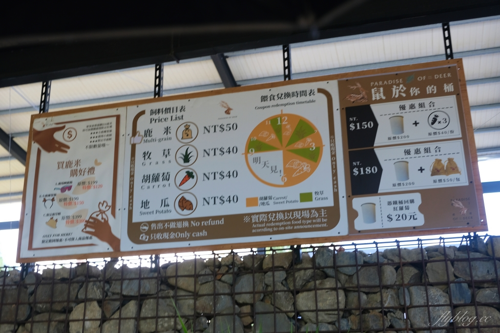

鹿境梅花鹿生態園區
鹿境紀念品販售區
這一區有販售一些飾品、紀念品等等，拍照起來也挺美的~~
擬真的小鹿玩偶也非常受歡迎，想要小鹿陪睡，來這裡買一隻就對了，Q版小鹿 也是超級卡哇伊，另外還有鹿角草帽、存錢筒、兒童墨鏡等，戴起來也很可愛唷! 尤其鹿角草帽一直讓我們想到喬巴，大小朋友都有適合的尺寸!

餵食梅花鹿
園區內頗為寬敞，場地也整理得很乾淨，感覺小鹿在裡頭等著食物上門也是挺悠哉的！
這裡的梅花鹿不會過於大隻，大概就是中小型梅花鹿，所以餵食起來也比較沒這麼害怕~~而且梅花鹿都很 親近人，大家可以放心餵食!另外梅花鹿有個特性就是鹿口水沾過的食物其他鹿就不太吃了，要特別注意唷！ 不過也因為構樹葉比較小片，所以如果是小朋友要餵食的話也要稍微幫忙留意一下安全!
鹿境梅花鹿飼料
飼料區有四種可以選擇分別是鹿米、牧草、紅蘿蔔、地瓜
小鹿其實不太吃牧草的，大概是吃太多吃到厭世了吧，看到很多人拿著紅蘿蔔 餵食，而小鹿也吃的津津有味，看著這些鹿心情十分療癒
